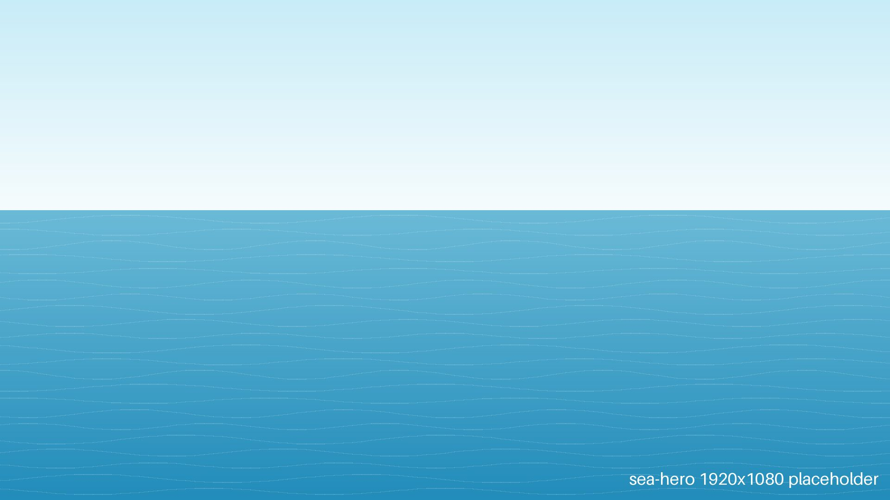
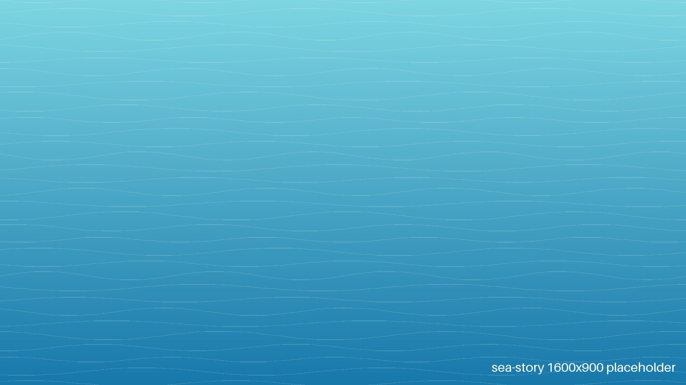
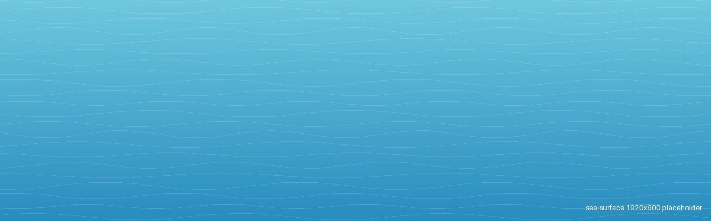
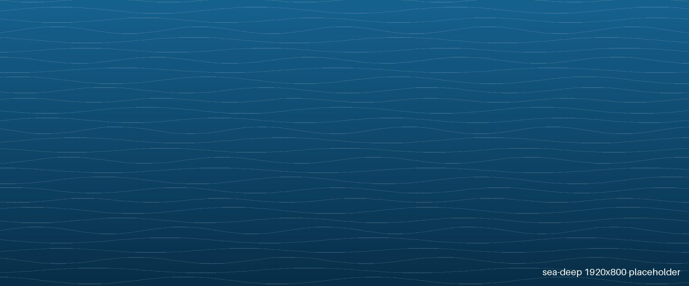

STATUS
- デザイン9
- コーディング7
- 相談しやすさ10
- スピード8
SKILL
- ひとめぼれデザイン思わず目を引く、若い感性のデザインで攻める
- さいごまで伴走相談から公開まで、同じメンバーがずっと担当
- 学生プライス学生ならではの価格とフットワークで動く
「きれいだけど無難」なサイトを見つけると、思わずかじりたくなる。
好物はお客さんの「こうしたい」という想い。

現役大学生のチームが、想いの伝わるホームページをつくっています。
「学サイト」は、地元の塾や教室のホームページが何年も更新されないまま残っているのを見て、「自分たちの手で変えられないか」と思ったことから始まりました。
大切にしているのは、見た目のきれいさだけでなく、教室の想いが生徒や保護者にまっすぐ届くこと。お客様と一緒に悩み、一緒に形にするつもりで、一つひとつのサイトをつくっています。


制作会社にありがちな「きれいだけど無難」ではなく、
同世代の感覚で、
最初にお話しした
学生チームだから

運営メンバー
4名
少人数だから、
現役大学生
3年生
授業と独学で
目標
1社
学生発の会社として
学サイトの海にすむ、
「きれいだけど無難」なサイトを見つけると、思わずかじりたくなる。
好物はお客さんの「こうしたい」という想い。